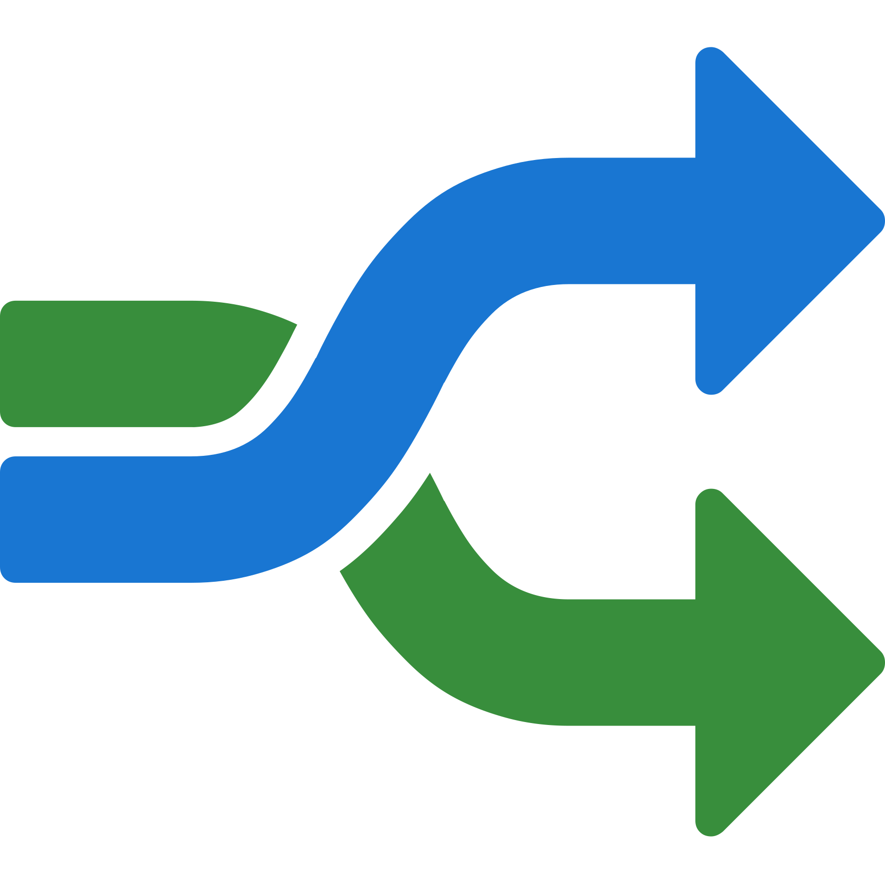

The page that you are currently viewing is for an old version of Stroom (Legacy). The documentation for the latest version of Stroom (7.1) can be found using the version drop-down at the top of the screen or by clicking here.
Event Forwarding
See Also
Introduction
In some situations, you will want to automatically extract stored Events in their XML format to forward to the file system. This is achieved via a Pipeline with an appropriate XSLT translation that is used to decide what events are forwarded. Once the Events have been chosen, the Pipeline would need to validate the Events (via a schemaFilter) and then the Events would be passed to an xmlWriter and then onto a file system writer (fileSystemOutputStreamProvider or RollingFileAppender).
Example Event Forwarding - Multiple destinations
In this example, we will create a pipeline that writes Events to the file system, but to multiple destinations based on the location of the Event Client element.
We will use the EventSource/Client/Location/Country element to decided where to store the events. Specifically, we store events from clients in AUS in one location, and events from clients in GBR to another. All other client locations will be ignored.
Create translations
First, we will create two translations - one for each country location Australia (AUS) and Great Britain (GBR). The AUS selection translation is
<?xml version="1.0" encoding="UTF-8" ?>
<xsl:stylesheet
version="3.0"
xmlns:xsl="http://www.w3.org/1999/XSL/Transform"
xmlns="event-logging:3"
xmlns:stroom="stroom"
xpath-default-namespace="event-logging:3
xmlns:xsi="http://www.w3.org/2001/XMLSchema-instance"
xmlns:xs="http://www.w3.org/2001/XMLSchema">
<!--
ClientAUS Translation: CHANGE HISTORY
v1.0.0 - 2015-01-19
v1.5.0 - 2020-04-15
This translation find all events where the EventSource/Client/Location/Country element
contains the string 'AUS' and then copies them.
-->
<!-- Match all events -->
<xsl:template match="/Events|/Events/@*">
<xsl:copy>
<xsl:apply-templates select="node()|@*" />
</xsl:copy>
</xsl:template>
<!-- Find all events whose Client location is in the AUS -->
<xsl:template match="Event">
<xsl:apply-templates select="EventSource/Client/Location/Country[contains(upper-case(text()), 'AUS')]" />
</xsl:template>
<!-- Country template - deep copy the event -->
<xsl:template match="Country">
<xsl:copy-of select="ancestor::Event" />
</xsl:template>
</xsl:stylesheet>
The Great Britain selection translation is
<?xml version="1.0" encoding="UTF-8" ?>
<xsl:stylesheet
version="3.0"
xmlns:xsl="http://www.w3.org/1999/XSL/Transform"
xmlns="event-logging:3"
xmlns:stroom="stroom"
xpath-default-namespace="event-logging:3
xmlns:xsi="http://www.w3.org/2001/XMLSchema-instance"
xmlns:xs="http://www.w3.org/2001/XMLSchema">
<!--
ClientGBR Translation: CHANGE HISTORY
v1.0.0 - 2015-01-19
v1.5.0 - 2020-04-15
This translation find all events where the EventSource/Client/Location/Country
element contains the string 'GBR' and then copies them.
-->
<!-- Match all events -->
<xsl:template match="/Events|/Events/@*">
<xsl:copy>
<xsl:apply-templates select="node()|@*" />
</xsl:copy>
</xsl:template>
<!-- Find all events whose Client location is in the GBR -->
<xsl:template match="Event">
<xsl:apply-templates select="EventSource/Client/Location/Country[contains(upper-case(text()), 'GBR')]" />
</xsl:template>
<!-- Country template - deep copy the event -->
<xsl:template match="Country">
<xsl:copy-of select="ancestor::Event" />
</xsl:template>
</xsl:stylesheet>
We will store this capability in the Explorer Folder MultiGeoForwarding.
Create two new XSLT under this folder, one called ClientAUS and one called ClientGBR.
Copy and paste the relevant XSL from the above code blocks into its comparable XSLT windows.
Save the XSLT by clicking on the save
 icon.
Having created the two translations we see
icon.
Having created the two translations we see

Create Pipeline
We now create a Pipeline called MultiGeoFwd in the Explorer tree. Within the MultiGeoForwarding folder right click to bring up the object context menu and sub-menu then create a New Pipeline called MultiGeoFwd. The Explorer should now look like

Clicking on the Pipeline Settings sub-item and add an appropriate description

Now switch to the Structure sub-item and select the Source element.
Next click on the Add New Pipeline Element icon
 .
.

Select Parser, XMLParser from the Element context menu
Click on OK in the Create Element dialog box to accept the default for the parser Id.
We continue building the pipeline structure by sequentially selecting the last Element and adding the next required Element. We next add a SplitFilter Element

We change the SplitFilter Id: from splitFilter to multiGeoSplitFilter and click on OK to add the Element to the Pipeline
Our Pipeline currently looks like
We now add the two XSLT translation elements, ClientAUS and ClientGBR to the split Filter. Left click on the split Filter then left click on the Add New Pipeline Element to bring up the pipeline Element context menu and select the XSLTFilter item

and change the Id: from xsltFilter to ClientAUSxsltFilter
Now select the multiGeoSplitFilter Element again and add another XSLTFilter as previously
Name this xsltFilter ClientGBRxsltFilter.
At this stage the Pipeline should look like
To continue building the Pipeline Structure, left click the ClientAUSxlstFilter
ClientAUSxsltFilter element then left click on the Add New Pipeline Element
to bring up the pipeline Element context menu and select the SchemaFilter item.
and change the Id: from schemaFilter to AUSschemaFilter to show
Now, left click the AUSschemaFilter element then then right click on the Add New Pipeline Element
to bring up the pipeline Element context menu and select the XMLWriter item
and change the Id: from xmlWriter to AUSxmlWriter

Your Pipeline should now look like

Finally, left click the AUSxmlWriter element then then right click on the Add New Pipeline Element Add New Pipeline Element
to bring up the Destination pipeline Element context menu.
Select RollingFileAppender
and change the Id: from rollingFileAppender to AUSrollingFileAppender to show
This completes the pipeline structure for the AUS branch of the pipeline. Replicate the process of adding schemaFilter, xmlWriter, and rollingFileAppender Elements for the GBR branch of the pipeline to get the complete pipeline structure as below
Save your Pipeline development work by clicking on the
icon at the top left of the MultiGeoFwd pipeline tab.
We will now assign appropriate properties to each of the pipeline’s elements. First, the client xsltFilters. Click the ClientAUSxsltFilter element to show
In the middle pane click on the xslt Property Name line. Now click on the Edit Property icon

This will bring up the Edit Property selection window
Select the Value: to be the ClientAUS translation.

Click on OK twice to get your back to main MultiGeoFwd tab which should now have an updated middle pane that looks like

Now go back to the top pane of the Pipeline Structure and select the AUSschemaFilter element on the pipeline. Then click the schemaGroup Property Name line. Now click on the Edit Property icon. Set the Property Value to be EVENTS.

then press OK.

Now select the AUSxmlWriter element in the pipeline structure and click the indentOutput Property Name line. Click on the Edit Property icon. Set the Property Value to be true. The completed Element should look like

Next, select the
 AUSrollingFileAppender
and change the Properties as per
AUSrollingFileAppender
and change the Properties as per
- fileName to be
fwd_${ms}.lock - frequency to be
15m - outputPaths to be
/stroom/volumes/defaultStreamVolume/forwarding/AUS00 - rolledFileName to be
fwd_${ms}.ready
Note that these settings are for demonstration purposes only and will depend on your unique Stroom instance’s configuration. The outputPath can contain replacement variables to provide more structure if desired. File Output substitution variables

Repeat this Element Property Name assignment for the GBR branch of the pipeline substituting the ClientGBR translation and /stroom/volumes/defaultStreamVolume/forwarding/GBR00 for rollingFileAppender outputPaths where appropriate.
Note, if you expect lots of events to be processed by the pipeline, you may which to create multiple outputPaths. For example, you could have
/stroom/volumes/defaultStreamVolume/forwarding/_AUS00_,
/stroom/volumes/defaultStreamVolume/forwarding/_AUS01_,
/stroom/volumes/defaultStreamVolume/forwarding/_AUS0n_
and
/stroom/volumes/defaultStreamVolume/forwarding/_GBR00_,
/stroom/volumes/defaultStreamVolume/forwarding/_GBR01_,
/stroom/volumes/defaultStreamVolume/forwarding/_GBR0n_
as appropriate.
Save the pipeline by pressing the Save
icon.
Test Pipeline
We first select a stream of Events which we know to have both AUS and GBR Client locations. We have such a stream from our Apache-SSLBlackBox-V2.0-EVENTS Feed.

We select the Events stream and Enter Stepping Mode by pressing the large
 button in the bottom right.
button in the bottom right.
and we will choose the  MultiGeoFwd to step with.
We are now presented with the Stepping tab positioned at the start

If we step forward by clicking on the icon we will see that our first event in our source stream has a Client Country location of USA.

If we now click on the ClientAUSxsltFilter element we will see the ClientAUS translation in the code pane. The first Event in the input pane and an empty event in the output pane. The output is empty as the Client/Location/Country is NOT the string AUS, which is what the translation is matching on.
If we step forward to the 5th Event we will see the output pane change and become populated. This is because this Event’s Client/Location/Country value is the string AUS.
Note, that you can move to the 5th Event on the pipeline by clicking on the icon repeatedly until you get to the 5th event, or you can insert your cursor into the recordNo of the stepping key to manually change the recordNo from 1 to 5
and then press Enter. This jumps the stepping process to the RecordNo you specify, in this particular case “5”.
If you repeatedly click on the icon seven more times you will continue to see Events in the output pane, as our stream source Client/Location/Country value is AUS for Events 5-11.
Now, double click on the ClientGBRxsltFilter element. The output pane will once again be empty as the Client/Location/Country value of this Event (AUS) does not match what your translation is filtering on (GBR).
If you now step forward one event using the icon, you will see the ClientGBR translation output pane populate as Events 12-16 have a Client/Location/Country of GRC.

We have thus tested the ‘splitting’ effect of our pipeline. We now need to turn it on and produce files.
Enabling Processors for Multi Forwarding Pipeline
To enable the Processors for the pipeline, select the MultiGeoFwd pipeline tab and then select the Processors sub-item.

For testing purposes, we will only apply this pipeline to our Apache-SSLBlackBox-V2.0-EVENTS feed to minimise the test output files.
To create the Processor, click the Add Processor
icon to bring up the Add Processor selection window.
Add the following items to the processor:
- Feed is
Apache-SSLBlackBox-V2.0-EVENTS - Type =
Events

then press OK to see

Enable the processors by checking both Enabled check boxes

{kind=link}
{kind=link}
{kind=link}
{kind=link}
{kind=link}
{kind=link}
{kind=link}
{kind=link}
{kind=link}
{kind=link}
{kind=link}
{kind=link}
{kind=link}
{kind=link}
{kind=link}
{kind=link}
{kind=link}
{kind=link}
If we switch to the Active Tasks tab of the MultiGeoFwd pipeline, a refresh of the panes
 will show that we have passed streams from the
APACHE-SSLBlackBox-V2.0-EVENTS feed to completion.
If we select the MultiGeoFwd pipeline in the top pane we will see each stream that has run.
will show that we have passed streams from the
APACHE-SSLBlackBox-V2.0-EVENTS feed to completion.
If we select the MultiGeoFwd pipeline in the top pane we will see each stream that has run.
{kind=link}
Take note that all streams have processed on Node node1a.
Examine Output Files on Destination Node
If we navigate to the /stroom/volumes/defaultStreamVolume/forwarding directory on the processing node we should be able to view the expected output files.
The output directory contains files with suffixes of *.lock or *.ready. All the files that are ‘currently processing’ have a nomenclature of *.lock suffix. These are the files that our pipeline is currently writing to. Remember we configured the rollingFileAppender to roll the files at a frequency of 15 minutes. We may need to wait up to 15 minutes before a file move from .lock to .ready status.
If we check one of the AUS00 output files we see the expected result
Similarly, if we look at one of the GBR00 output files we also see the expected output
At this point, you can manage the .ready files in any manner you see fit.